Gichan Lee
① 고객은 뭐가 불편한지 모른다① Users can't name what's wrong
② 결과를 믿게 만든다② Make the output trustworthy
③ 사람을 루프 안에③ Keep a human in the loop
Lead AI FDE
의사결정권자인 C레벨(의도) · AI 에이전트(일꾼) · 검증하는 개발자 — 예산과 우선순위를 쥔 사람에서 시작해 배포까지, 이 세 역할을 하나의 루프로 잇고, 명시적 휴먼인더루프 정책으로 안전하게 운영합니다.I connect three roles into one working loop — the C-level decision-maker who sets intent, budget and priority; an AI agent (the worker); and a developer who validates — kept safe by an explicit human-in-the-loop policy.
The AI collaboration system I built — KIBA-Automation
Lead AI FDE로서 제 핵심 역할은 오케스트레이션입니다. 회의에서 의도를 정하는 C레벨 의사결정권자(예산·우선순위를 쥔 사람), 실제 작업을 수행하는 AI 에이전트(보드를 읽고 변경안을 작성), 그리고 이를 검증·승인하는 개발자를 하나로 잇습니다. 에이전트의 작업을 비개발자도 주도할 수 있을 만큼 명료하게 만들고, 개발자의 판단을 명시적 정책으로 인코딩했습니다 — 그래서 세 역할이 하나의 루프처럼 움직입니다. As Lead AI FDE my core job is orchestration. I connect the C-level decision-maker who sets intent, budget and priority in meetings, an AI agent that does the work (reads the board, drafts the change set), and a developer who validates and approves. I made the agent's job legible enough for non-developers to drive, and encoded the developer's judgment as an explicit policy — so the three roles move as one loop.
이 리드 역할에 실제로 필요한 것 — 그 이면의 고려사항들:What this lead role really takes — the considerations behind it:
Verification is the bottleneck — 배운 것은 권한을 좁히는 것이 신뢰를 넓힌다는 점이었습니다. 에이전트가 할 수 있는 일을 줄이자 오히려 사람들이 더 많은 일을 맡겼습니다. 다음엔 승인을 한 등급으로 두지 않으려 합니다 — 지금은 모든 쓰기가 사람을 기다리느라 사소한 변경까지 병목이 됩니다. 되돌리기 쉬운 작업은 자동, 어려운 작업만 승인으로 나누는 것이 다음 과제입니다.Autonomy slider — in teamwork, reversibility beats raw automation speed. So the agent writes nothing until a human approves, and trust is encoded as a written policy, not a vibe — which is what lets non-developers drive the loop.
Verification is the bottleneck — what I learned: narrowing the agent's authority widened people's trust in it. The less it was allowed to do, the more they handed it. What I'd fix next is the single tier of approval — every write waits on a human today, so even trivial changes queue. Splitting it by reversibility (cheap-to-undo runs automatically, costly-to-undo asks) is the next problem.
한국경영분석연구원Korea Institute of Business Analysis & Development — AI Technical Product Manager / Lead AI FDE
원장이 기존 경력을 눈여겨봐 Lead AI FDE 역할을 맡겼습니다. 대표는 비개발자이기에 기술적 제약에 갇히지 않은 넓은 요구를 던지고, 저는 그것을 실행 가능한 기술 과제로 번역합니다 — 그래서 서로의 시야가 시너지를 냅니다. AI 엔지니어 3명(저 포함)이 한 팀으로 움직이며, 저는 팀의 결과물이 비즈니스 기준을 통과하도록 조정하고 최종 판단을 책임집니다. Claude Code + gh 기반 팀 협업 시스템(회의록 → AI 에이전트 → 보드)을 설계·운영하고, 정부 지침서 분석 LLM 워크플로우로 업무 시간을 10시간 → 2시간으로 단축했습니다. The director, impressed by my prior experience, handed me the Lead AI FDE role. Our CEO is non-technical, which means the asks arrive unconstrained by what engineers assume is possible — and I translate them into executable engineering work. The two viewpoints compound. We run as a team of three AI engineers (myself included); I align the team's output against the business bar and own the final call. I designed and run the team's collaboration system (meeting notes → AI agent → board) on Claude Code + gh, and cut a government-guideline analysis workflow from 10 hours to 2.
회고 — 배운 것은 추천 시스템의 성패가 정확도보다 설명 가능성에서 갈린다는 점이었습니다. 같은 점수라도 근거가 붙는 순간 논의가 ‘이 점수가 맞나’에서 ‘이 기준이 맞나’로 옮겨갔습니다. 다음엔 그 기준을 화면에서 직접 만지게 하려 합니다 — 가중치가 코드에 있는 한, 동의하지 않는 사용자는 결과를 무시하는 것 말고 할 수 있는 일이 없기 때문입니다.Reward function — it shows not just a score but the ‘who, and why’. For a non-expert to trust an AI recommendation, the grounds for confidence must be visible — not just the result.
Retro — what I learned: a recommender is judged on explainability before accuracy. The moment each score carried its reasoning, the debate moved from “is this score right?” to “is this criterion right?” — a far more useful argument. Next I want those criteria adjustable in the UI: while the weights live in code, a user who disagrees can do nothing but ignore the output.
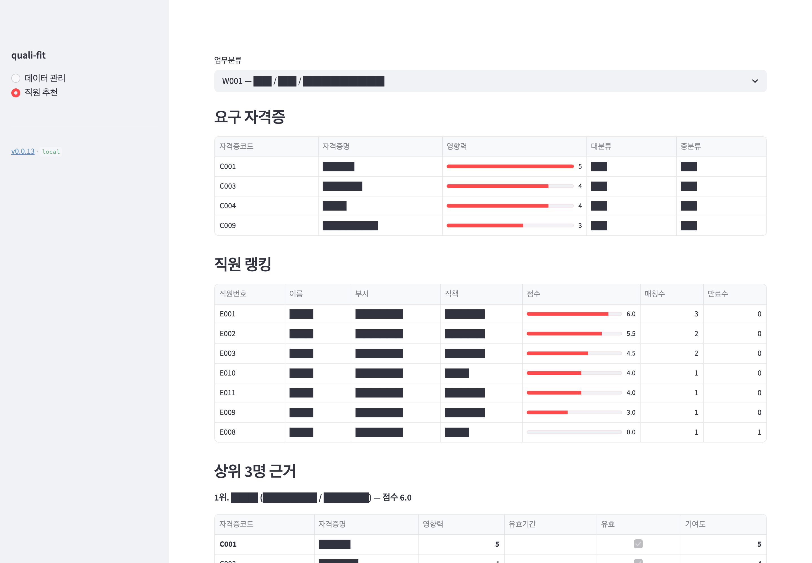
※ 화면은 모두 합성 데이터이며, 이름·부서·직책·자격증명 등 내용 텍스트는 전부 리댁션(█) 처리했습니다 — 실제 직원 정보·조직명은 포함되지 않습니다.※ All screens use synthetic data; content text (names, departments, titles, certifications) is fully redacted (█) — no real employee or organization data is shown.
Build
현업과 생활의 문제를 동작하는 AI 제품으로 만듭니다. 모두 한 k3s 클러스터(월 $0)에서 라이브로 운영합니다.Real and everyday problems, turned into working AI products — all live on a single k3s cluster ($0/mo).
BookToss — API 없는 도서관을 위한 자율 에이전트An autonomous agent for API-less libraries
왜 만들었나 — 책 한 권을 빌리는 데 단계가 너무 많았습니다.
먼저 네이버 지도에서 근처에 어떤 도서관이 있는지 찾고, 그 도서관 사이트에 하나씩 들어가
같은 제목을 다시 검색합니다. 그러고도 대출 가능한 곳이 없으면 처음부터 다시입니다.
제목만 넣으면 갈 수 있는 곳이 지도에 뜨기를 바랐습니다.
구립도서관에는 공개 API가 없어, 에이전트가 사람이 하던 그 과정을 그대로 대신하게 했습니다.
LangGraph + Browser-use 에이전트가 각 도서관 사이트를 자동 탐색하고 팝업을 처리해,
대출 가능한 곳만 한 화면에 모아줍니다.
검색 시간 5분 → 1분(80% 단축).
현재 서비스 범위는 서울 강남구이며 전국으로 확장 중입니다 — 도서관마다 사이트 구조가 달라, 범위 확장은 곧 파서를 얼마나 일반화했느냐의 문제입니다.
Upstage Solar API로 에이전트 흐름을 처음부터 재구축 중이며, 빌드 히스토리를 쿡북처럼 기록합니다.
Why I built it — borrowing one book took too many steps. First find which
libraries are nearby on Naver Maps, then open each library's site and search the same title again
— and if nothing is available, start over. I wanted to type a title and see, on a map,
the places I could actually go.
District libraries expose no public API, so I had the agent do exactly what a person was doing.
A LangGraph + Browser-use agent navigates each library site, handles pop-ups,
and gathers only the branches where it is available onto one screen.
Search time 5 min → 1 min (−80%).
Live coverage is Gangnam-gu, Seoul, expanding nationwide — every library site is structured differently, so widening coverage is really a question of how general the parser is.
Currently rebuilding the agent flow from scratch on Upstage's Solar API — logging the build history like a cookbook.
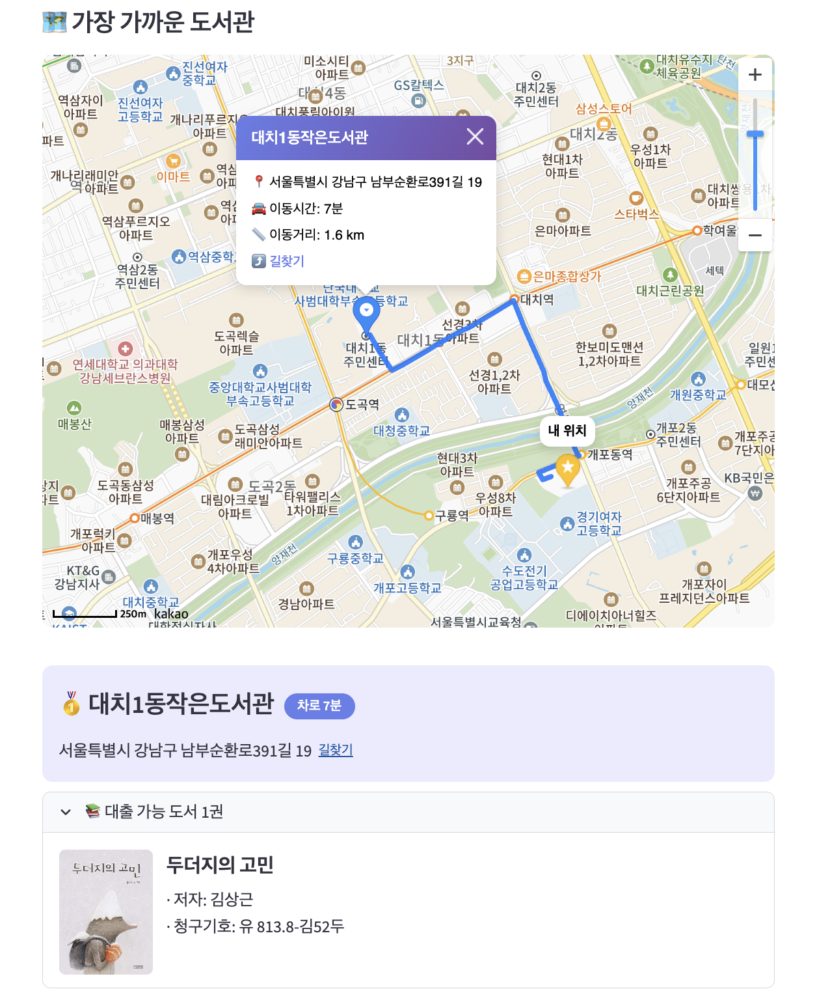
Bithabit — 습관 추적 커뮤니티 플랫폼Habit-tracking community platform
소규모 스터디 그룹을 위한 타임랩스 카메라 + 실시간 채팅. GIF를 클라이언트(gif.js Web Worker)에서 생성해 서버 연산 비용을 최소화합니다. 비밀번호 없는 인증(이메일 OTP + JWT)을 적용했습니다. 출시 2년이 지난 지금도 핵심 유저가 활동 중입니다. A time-lapse camera + live chat for small study groups. GIFs are rendered on the client (gif.js Web Worker) to minimize server compute. Passwordless auth (email OTP + JWT). Two years after launch, core users are still active.
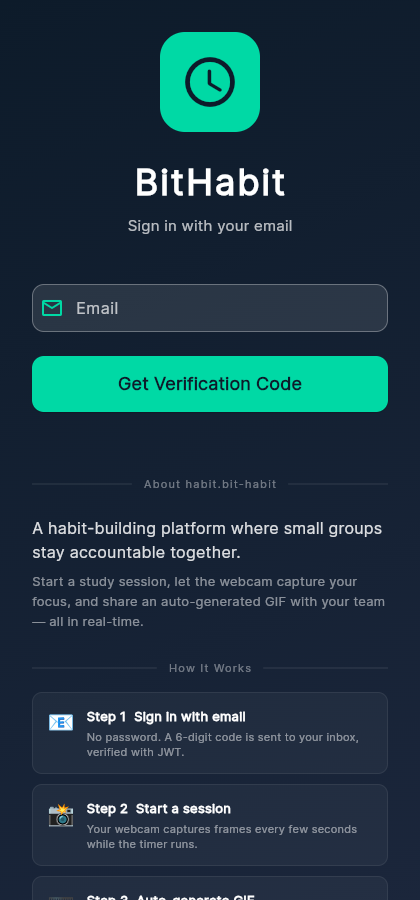
회고 — 이 서비스는 랜딩 페이지도 마케팅도 없이 지인과 커뮤니티 유입만으로 2년을 버텼습니다. 배운 것은 리텐션이 유입보다 먼저 증명될 수 있다는 것, 그리고 그게 증명됐는데도 유입을 안 만든 건 제 선택의 실패였다는 것입니다. 만드는 일이 재밌어서 알리는 일을 2년간 미뤘습니다. 다음엔 순서를 바꾸겠습니다.By design — habits stick as the record grows. Making progress visible through timelapse and a status dashboard is why real users have stayed for two years. Deciding what to build, watching who used it, and deciding again was my job too — not just the engineering.
Retro — it held those users for two years with no landing page and no marketing — friends and one community post. What I learned is that retention can be proven before acquisition, and that proving it and still not building acquisition was my failure, not the product's. Building was the fun part, so I deferred telling anyone for two years. Next time I'd reverse that order.
Sentinel — 실시간 인지 보조 에이전트Real-time Cognitive Assistant
대화가 격해지기 전에 높아진 목소리를 실시간으로 감지해 알려주는 음성 모니터입니다. 클라우드 API 대신 로컬 NumPy를 선택해 비용 $0, 지연 <10ms를 달성했습니다. 인포뱅크 CTO와 매주 멘토링하며 기술 선택을 비즈니스 관점에서 검증합니다. A voice monitor that detects a rising voice in real time and alerts you before a conversation escalates. Chose local NumPy over a cloud API to hit $0 cost and <10ms latency. Validated the tech choices from a business angle in weekly mentoring with Infobank's CTO.
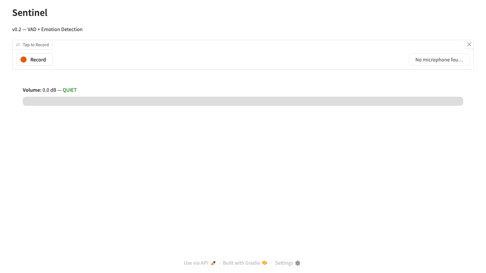
회고 — 배운 것은 제약을 먼저 정하면 아키텍처가 따라온다는 것이었습니다. ‘비용 0, 10ms 이내’를 먼저 못 박자 쓸 수 있는 선택지가 하나로 좁혀졌고, 그 덕에 해커톤 기간 안에 완성했습니다. 다음엔 임계값을 사람에게 맞추려 합니다 — 조용한 방과 카페에서 ‘큰 목소리’의 기준이 다른데 지금은 하나의 숫자로 고정돼 있어, 환경이 바뀌면 오탐이 늘어납니다.Design tradeoff — voice monitoring runs on local NumPy, not a cloud API (<10ms, $0). In ‘real-time’, latency is distrust — so removing the network was itself the product value.
Retro — what I learned: fix the constraints first and the architecture follows. Committing to “$0 and under 10ms” up front collapsed the option space to one, which is why it shipped inside a hackathon. Next I'd calibrate the threshold per person — “loud” means something different in a quiet room than in a café, and it is one fixed number today, so false positives climb as the setting changes.
bit-habit-infra — 직접 운영하는 인프라 플랫폼Self-hosted infrastructure platform
Oracle Cloud 무료 티어의 ARM 서버 한 대에서 k3s로 사이트 ~20개를 직접 운영합니다.
Traefik이 모든 요청을 호스트명으로 라우팅하고, cert-manager가 *.bit-habit.com 와일드카드 인증서 한 장을 자동으로 갱신합니다.
새 사이트는 Ingress 규칙 한 줄이면 HTTPS로 바로 열립니다.
외부에서 60초마다 상태를 점검하며, 지금도 계속 돌아가고 있습니다.
Runs ~20 sites on one ARM server (Oracle Cloud free tier) with k3s.
Traefik routes every request by hostname, and cert-manager auto-renews a single *.bit-habit.com wildcard cert.
A new site goes live over HTTPS with one Ingress rule.
Uptime is checked from the outside every 60 seconds — and it keeps running.
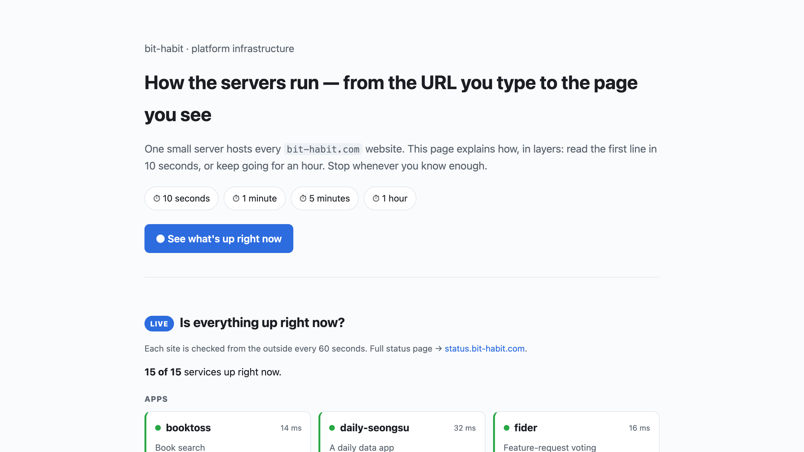
이 인프라의 구조·요청 흐름·실시간 상태를 직접 만든 설명 페이지 infra.bit-habit.com에서 계층별(10초 → 1시간)로 볼 수 있습니다. 전체 가동 현황은 status.bit-habit.com에서 확인할 수 있습니다. I built a layered explainer — infra.bit-habit.com — that walks the architecture, one request, and live status (10 seconds → 1 hour). Full uptime is at status.bit-habit.com.
Teach
"AI를 누구나 이해하게" 만드는 라이브 교육 제품들. 비전공자도 직접 만지며 배웁니다.Live educational products that make AI understandable to anyone — non-experts learn by touching it.
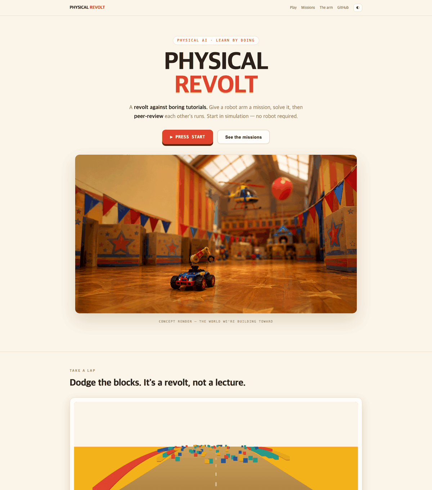
Evals — 45개 설정을 밤새 자동 채점하며 배운 것은 RAG의 성능 차이가 대부분 검색 단계에서 결정된다는 것이었습니다. 모델을 바꾸는 것보다 청크 크기와 top-k를 바꾸는 쪽이 점수를 훨씬 크게 움직였습니다. 다만 채점 기준을 제가 직접 만들었다는 한계가 있습니다 — 다음엔 정답셋을 남이 만들게 하거나, 최소한 사람 평가와 한 번 대조해 보고 싶습니다.Cost tradeoff — an agent loop is not the default. I try single-shot first — far cheaper in tokens — and whatever it can't fill is never invented: it stays in the structured output as ‘Not specified’. Because the gaps are visible, you can ask whether that field was actually worth having, and only then escalate to the agentic loop. That's why the two run side by side: the recall↔token trade-off is something you should look at, not assume. Most questions are fine on the cheap path; the ones that aren't are worth identifying.
Evals — grading 45 configurations overnight taught me that most of a RAG system's quality is decided in retrieval: changing chunk size and top-k moved the score far more than changing the model. The limitation is that I wrote the grading rubric myself — next time I'd have someone else build the answer set, or at minimum check it once against human judgement.
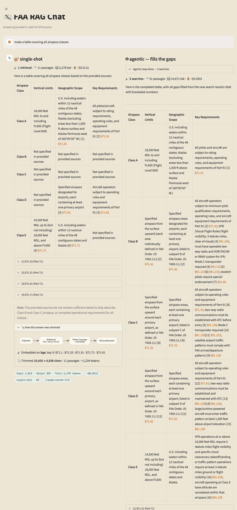
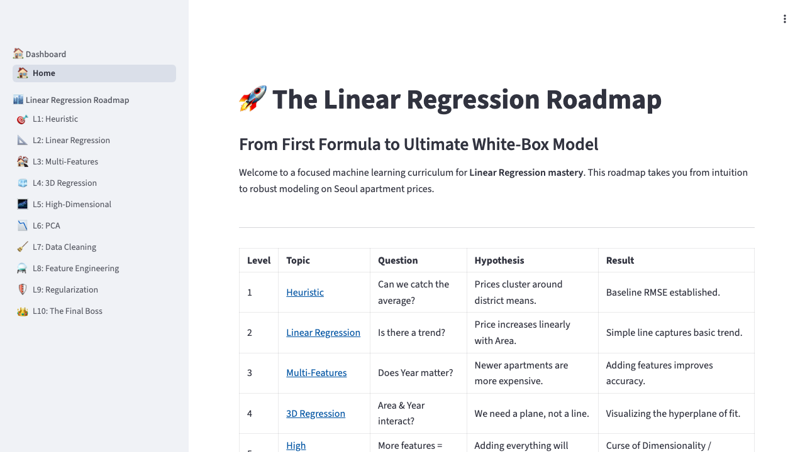
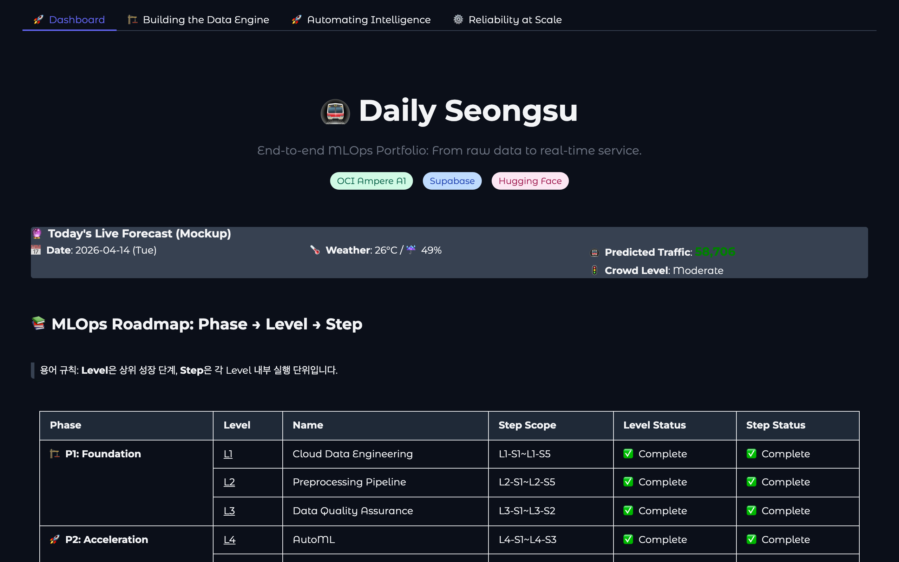
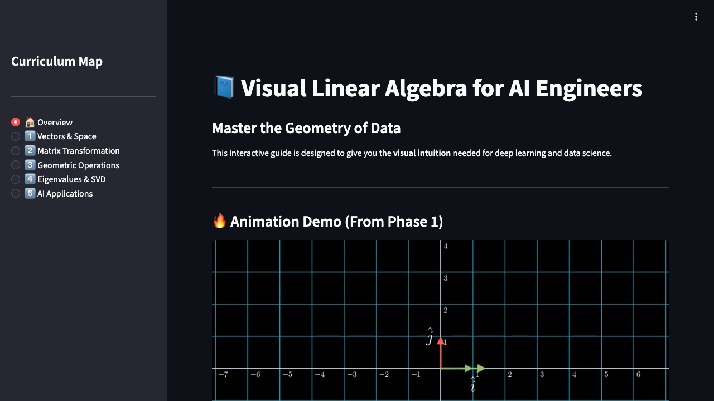
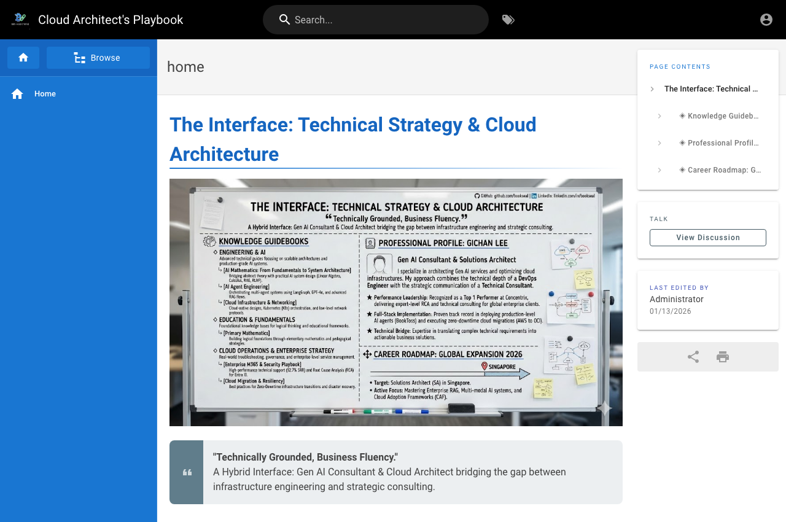
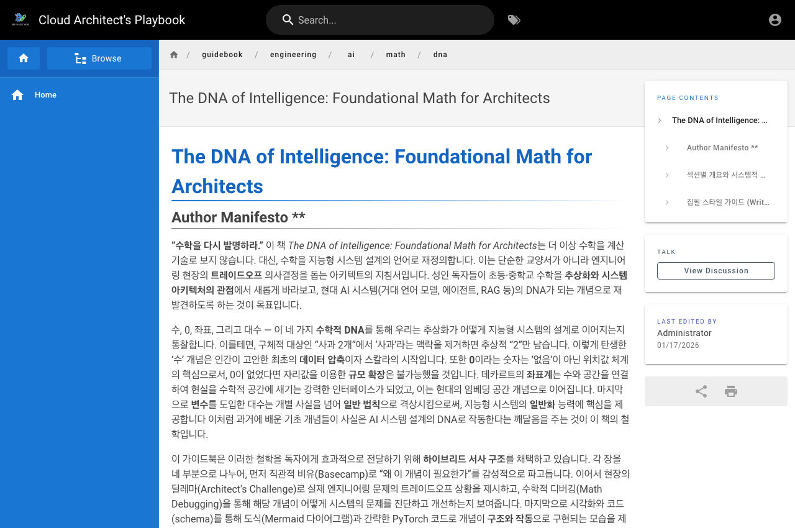
+ 초등수학 유튜브 채널(약 1년, 200여 편) — "9+1은 왜 10인가(위치적 기수법)"처럼 기초 원리부터 가르친 출발점입니다.+ Elementary-math YouTube channel (~1 year, 200+ videos) — where it started: teaching from first principles, like "why is 9+1 ten? (positional notation)."
Tech Stack
AI & Automation
Cloud & DevOps
Languages
Experience
한국경영분석연구원Korea Institute of Business Analysis & Development — AI Technical Product Manager / Lead AI FDE
Concentrix Korea (Microsoft M365 지원)(Microsoft M365 support) — Technical Success Advisor
- 입사 첫 달부터 SRR 92.7%, DSAT 0%, 별점 케이스 42건으로 20명 중 전 KPI 1위를 기록했습니다. Microsoft Global Tester로 선정되었습니다.From my first month, #1 of 20 on every KPI — SRR 92.7%, DSAT 0%, 42 starred cases. Selected as a Microsoft Global Tester.
- 신입 동기들과 'Fireteam'을 결성해 MS-900 자격증 공동 취득 문화를 주도해 팀원 이탈 방지에 기여했습니다.Founded a 'Fireteam' with new hires to earn the MS-900 certification together — helped curb attrition.
“이기찬 님과의 상담은 제가 경험한 최고의 고객 지원 경험이었습니다. … 이 분은 귀사의 정말 소중한 자산입니다. 앞으로 저의 Default 상담사로 등록해 두셨으면 합니다.”“Working with Gichan was the best customer-support experience I’ve ever had. … This person is a truly valuable asset to your company — please make him my default advisor from now on.”
— 실제 고객 피드백 · Microsoft M365 지원(Concentrix), 2025— real customer feedback · Microsoft M365 support (Concentrix), 2025전문 보기Read the full note (Korean)
이기찬 님과의 상담과 해결 과정은 제가 경험한 최고의 고객 지원 경험이었습니다.
Microsoft Teams 로그인 문제로 연락드렸을 때, 솔직히 큰 기대를 하지 않았습니다. 보통 이런 기술 문제는 해결 과정이 복잡하고 답답할 때가 많았기 때문입니다. 하지만 오늘 상담사 이기찬님의 지원을 받으면서 제 생각이 완전히 틀렸다는 것을 깨달았습니다.
상담사님께서는 단순히 제가 말씀드린 ‘Teams 로그인 오류’라는 현상에만 집중하지 않으시고, 문제의 근본 원인이 Microsoft 모바일 앱 전체에 있다는 것을 정확하게 짚어내셨습니다. 그 전문적인 통찰력에 놀랐습니다.
더 감동적이었던 것은 문제 해결 과정이었습니다. 제 눈높이에 맞춰 어려운 기술 용어는 하나도 사용하지 않으시고, 마치 옆에서 함께 화면을 보며 알려주는 것처럼 차근차근 쉽고 편안하게 안내해주셨습니다. 막막하고 답답했던 제 마음을 먼저 헤아려주시는 듯한 따뜻한 말투와 인내심 덕분에, 문제 해결을 넘어 마음의 위로까지 받는 기분이었습니다.
거기에다가 타고난 차분한 목소리까지. 성우를 직업으로 택하셨어도 성공하셨을 거라 생각합니다.
이런 분께는 차별화된 대우를 해서라도 다른 생각이 들지 않도록 하여야 할 것입니다. 이러한 훌륭한 직원을 보유한 귀사는 복도 참 많다는 생각이 듭니다.
이런 완벽한 지원 덕분에 문제는 깔끔하게 해결되었고, Microsoft라는 브랜드에 대한 신뢰도가 몇 배는 더 높아졌습니다. 훌륭한 직원 한 분이 회사의 전체 이미지를 얼마나 긍정적으로 만들 수 있는지 몸소 체험했습니다.
부디 오늘 저를 응대해주신 상담사님께 최고의 칭찬과 격려를 꼭 전달해주시길 바랍니다. 이 분은 귀사의 정말 소중한 자산입니다. 제 문제 해결을 위해 최선을 다해주신 상담사님께 다시 한번 진심으로 감사드립니다.
이왕이면 앞으로 저의 Default 상담사로 등록해 두셨으면 합니다.
감사합니다. 추석 잘 보내십시오.
FPT Software Korea — 임베디드 지원 엔지니어Embedded Support Engineer
- 현대오토에버 협력사를 대상으로 보안 모듈 오류를 진단·해결했습니다.Diagnosed and resolved security-module faults for Hyundai AutoEver partner companies.
Bithabit — AI Architect (창업자)(Founder)
가마솥 화상영어 — 창업자 / 운영자 (베트남 하노이)Gamasot Video English — Founder / Operator (Hanoi, Vietnam)
- 왜 이 사업 — 좋은 영어 교육의 접근성 문제를, 국경을 넘어 교사와 학생을 화상으로 직접 연결해 풀었습니다. 교재(콘텐츠)가 아니라 관계와 운영을 파는 모델로 설계했습니다.Why this business — I tackled access to good English teaching by connecting teachers and students directly across borders over video — a model built to sell relationships and operations, not content.
- 한국 학생 ↔ 필리핀 교사를 연결한 완전 비대면 영어교육 사업을 운영했습니다. 교사 면접·교수법 코칭, 학생·학부모 피드백 수집·반영을 직접 맡았습니다.A fully remote English-education business connecting Korean students with Filipino teachers — teacher interviews, teaching coaching, and acting on student/parent feedback.
- 카카오톡 채널 운영, 교사 관리 프로그램·영어회화용 Unity 게임을 제작했습니다. 빌드→교육→커뮤니티 운영의 DevRel 풀사이클을 4년간 선경험했습니다.Ran a KakaoTalk channel and built a teacher-management tool and a Unity English-conversation game — four early years of the full build→teach→community DevRel cycle.
- 회고 · 전환 — 반복되는 운영을 도구로 줄이는 데서 가장 큰 재미를 느꼈고, 이걸 제대로 하려면 직접 만들 줄 알아야 한다고 판단해 개발자로 전환했습니다. 지금 코드로 만드는 모든 것의 뿌리입니다.Retro & pivot — what I enjoyed most was cutting repetitive operations down with tools; realizing I needed to build them properly is why I became an engineer — the root of everything I build in code today.
가르치며 배운 것: Fast Campus × Upstage AI Lab 수료 · École 42 (Seoul) 스터디를 3년간 운영 → 함께 공부하던 동료 1명이 Upstage AI Research Engineer 인턴이 됐습니다.What teaching taught me: completed the Fast Campus × Upstage AI Lab · ran an École 42 (Seoul) study group for 3 years → one peer I studied with went on to intern as an Upstage AI Research Engineer.
학력Education
École 42는 2013년 파리에서 Xavier Niel이 설립한 무상 컴퓨터공학 교육기관으로,
현재 30여 개국 50개 이상 캠퍼스를 가진 세계 최대의 무료 개발자 교육 네트워크입니다.
교수도, 강의도, 교재도 없습니다. 직접 프로젝트를 만들어 동료 앞에서 방어해야 통과되고,
캠퍼스는 24시간 열려 있으며 정해진 시간표가 없습니다 — 이 사이트의 Physical Spark가 쓰는 동료 심사 구조가 여기서 왔습니다.
입학은 한 달간 C로만 진행되는 전일제 몰입 과정 ‘라피신(La Piscine)’을 통과해야 합니다.
초반 과제는 ‘노름(the Norm)’이라는 코딩 규칙(함수 25줄 제한, for·switch 금지)을 지켜야 하고,
자동 검증을 통과해야 비로소 사람이 리뷰합니다.
42의 자격은 프랑스 국가직업자격체계에 RNCP 7단계 — 석사(bac+5)에 준하는 등급으로 등록되어 있습니다.
École 42 is a tuition-free computer science school founded in Paris in 2013 by Xavier Niel —
now the world’s largest network of free coding schools, with 50+ campuses across 30+ countries.
No professors, no lectures, no textbooks. You build the project and then defend it in peer evaluation;
campuses are open 24/7 and there is no fixed schedule — the same structure Physical Spark on this site is built on.
Admission is “La Piscine”: one month of full-time immersion, in C.
Early projects must satisfy “the Norm” (functions capped at 25 lines, no for or switch)
and pass automated validation before a human will review them.
Its qualification is registered by the French state at RNCP Level 7 — the master’s-equivalent (bac+5) tier
of the national qualifications framework.
직접 만든 것들 — minishell(C로 bash 셸을 파이프·리다이렉션·시그널까지 재구현), ft_irc(C++ 멀티클라이언트 IRC 서버), Inception(Docker Compose로 Nginx·WordPress·MariaDB를 컨테이너부터). 코드: github.com/bookseal ↗What I actually built there — minishell (a bash shell reimplemented in C, down to pipes, redirection and signals), ft_irc (a multi-client IRC server in C++), and Inception (an Nginx / WordPress / MariaDB stack built from containers up with Docker Compose). Code at github.com/bookseal ↗